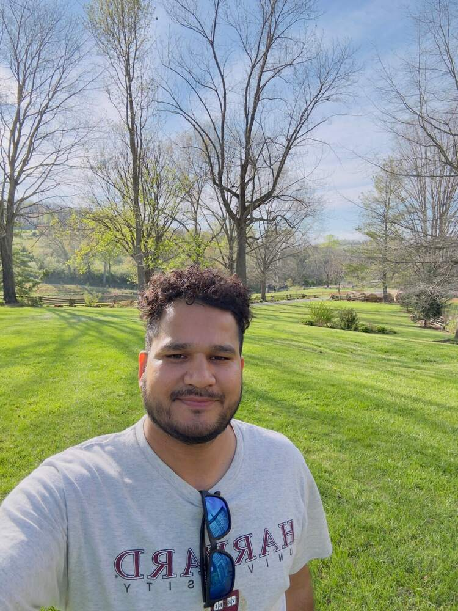

01 / RETRIEVALS
Satellite validation
Assessing satellite trace-gas products with Pandora, MAX-DOAS, aircraft, and other independent observations. I study retrieval sensitivity and the factors that shape satellite columns.
I connect satellite, aircraft, and ground-based observations to understand atmospheric composition and make air-quality information more useful for research and monitoring.

My work brings together observations across platforms and scales to evaluate satellite products, understand atmospheric processes, and explore how satellite data can support air-quality monitoring.
Assessing satellite trace-gas products with Pandora, MAX-DOAS, aircraft, and other independent observations. I study retrieval sensitivity and the factors that shape satellite columns.
Investigating when and where satellite HCHO, NO₂, and aerosol observations provide insight into near-surface ozone and particulate pollution.
Using atmospheric chemistry, meteorology, and planetary boundary layer context to interpret trace-gas variability from the Himalaya to U.S. urban regions.
A few examples of work that links instrument evaluation with atmospheric science and practical monitoring questions.
Research on how TEMPO HCHO observations relate to summertime ozone and PM₂.₅, and how satellite patterns can complement surface monitoring networks.
Read related TEMPO validation research ↗MAX-DOAS and satellite observations of NO₂, SO₂, HCHO, and glyoxal.
Developing and assessing satellite ozone profile retrievals with independent observations.
A visual record of presenting satellite research, working across observing platforms, and meeting the people behind collaborative science.
This poster presents a spatiotemporal assessment of TEMPO v3 formaldehyde columns using Pandora observations, including retrieval sensitivity and implications for air-quality applications.
SELECT AN IMAGE TO ENLARGE
Selected peer-reviewed work spanning satellite retrievals, validation, and atmospheric composition. See the DOI links for full details.
Journal of Geophysical Research: Atmospheres, 131, e2025JD044788
Atmospheric Measurement Techniques, 18, 2899–2917
Atmospheric Environment, 336, 120746
Atmospheric Measurement Techniques, 16, 889–909
This is a selected list. My CV includes additional publications, conference presentations, and collaborative work.
I am an atmospheric scientist working across satellite remote sensing, atmospheric chemistry, and air-quality applications. My research path began with ozone retrievals from India’s INSAT geostationary satellites and now spans emerging GEO and LEO missions, field campaigns, and ground-based networks.
I value collaborative science that connects measurement quality to clear questions about the atmosphere and the communities that monitor it.
Satellite remote sensing and air-quality research in collaboration with NASA Langley Research Center.
Integrated satellite, airborne, Pandora, and surface observations for atmospheric composition research.
Ozone retrievals, trace-gas observations, and satellite validation over the Himalaya and associated regions.
Thesis: “Variabilities in Trace Gases and Meteorological Parameters over the Himalayan and Associated Regions.”
For research collaborations, speaking invitations, or questions about my work, feel free to get in touch.